Econ 5120 Macroeconomic Theory
International Trade & Exchange Rates (chpt 19 & 20)
Introduction
High frequency data
Chapter 19: International Trade
Chapter 20: Exchange Rates
CPI
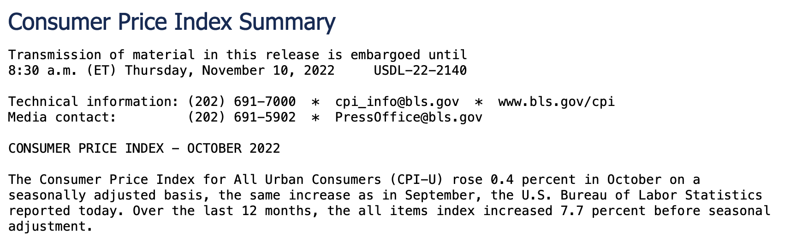BLS Imports / Exports
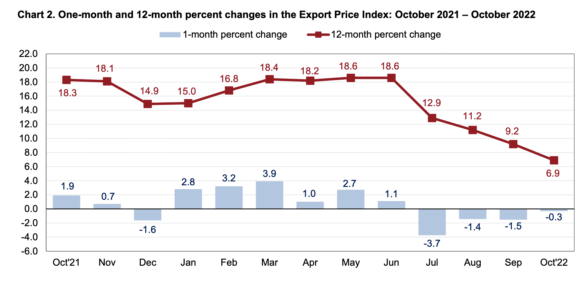Household Debt and Credit Report
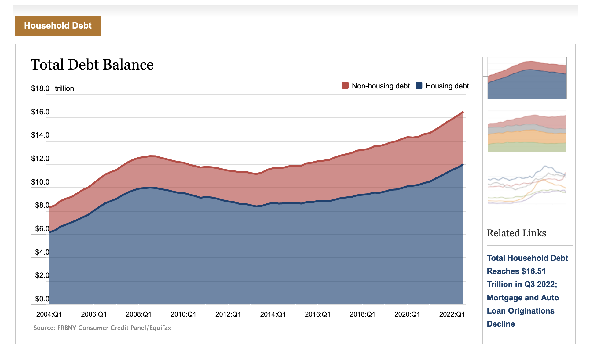Monthly Retail
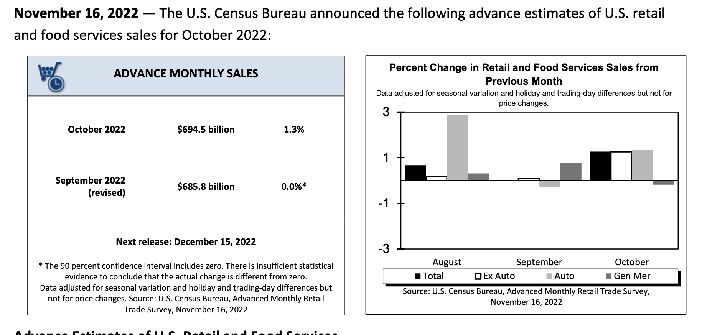Chapter 19: International Trade
Since WWII tariffs and transportation costs have fallen \(\implies\) international trade increasingly important to the world economy.
US Imports generally exceeded US exports since the late 1970s.
Running a trade deficit allows domestic consumption, investment and government expenditures to be financed by the rest of the world lending goods and services to the US.
Trade between countries can be viewed as an extension of trade within countries.
Public policy aims to find ways to redistribute gains from trade from economic winners to losers.
Chapter 19: International Trade
Trade deficits allow countries to smooth their consumption over time (similar to permanent-income hypothesis)
Trade does not need to be balanced year to year but must be in the long run.
Trade is based on comparative advantage. Countries produce the goods they are best at producing, not in an absolute sense, but relative to other countries.
Chapter 19: International Trade
Alternative to trading goods is to allow the free flow of inputs, like labor and capital. Input flows depend on where they earn the highest return.
- Efficiency gains from allowing free migration of labor appear to be extremely large, based on the large TFP differences across country.
US has gone from net lender to to the world to being a net borrower. The amount of foreign debt owed by the US exceeds 45% of GDP in recent years.
- High relative to US history but not relative to debt ratios of other countries.
Trade Basics
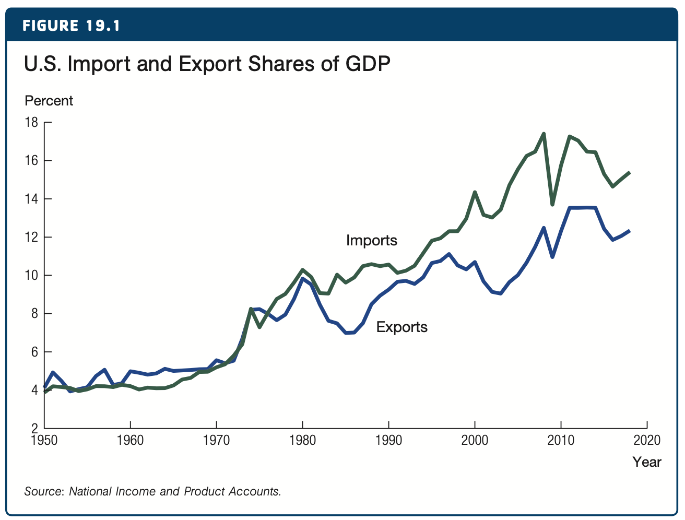
Since the 1950s US imports and exports have risen steadily
Transporting goods and services across countries has become cheaper.
Goods:
Average ocean freight charges per short ton declined from $95 in 1920 to $29 in 1990.
Airline revenue per passenger fell from 112 cents in 1930 to 11 cents in 2008.
Services:
- Internet makes costs virtually free
Source: Macroeconomics, Jones, 2021
Trade Balance
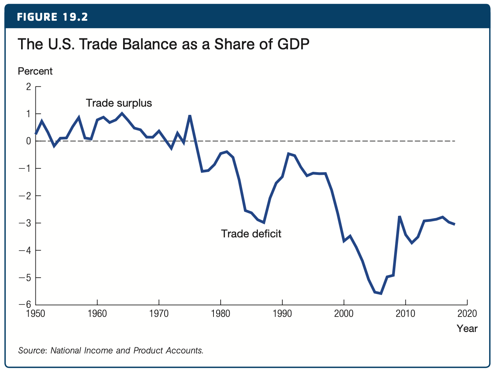
Trade balance or net exports
From 1950 to 1970s the US ran a trade surplus.
From late 1970s on the US ran a trade deficit.
Closed Global Economy: The US + Rest of World (RoW) = zero
Source: Macroeconomics, Jones, 2021
Trade Balance Around the World
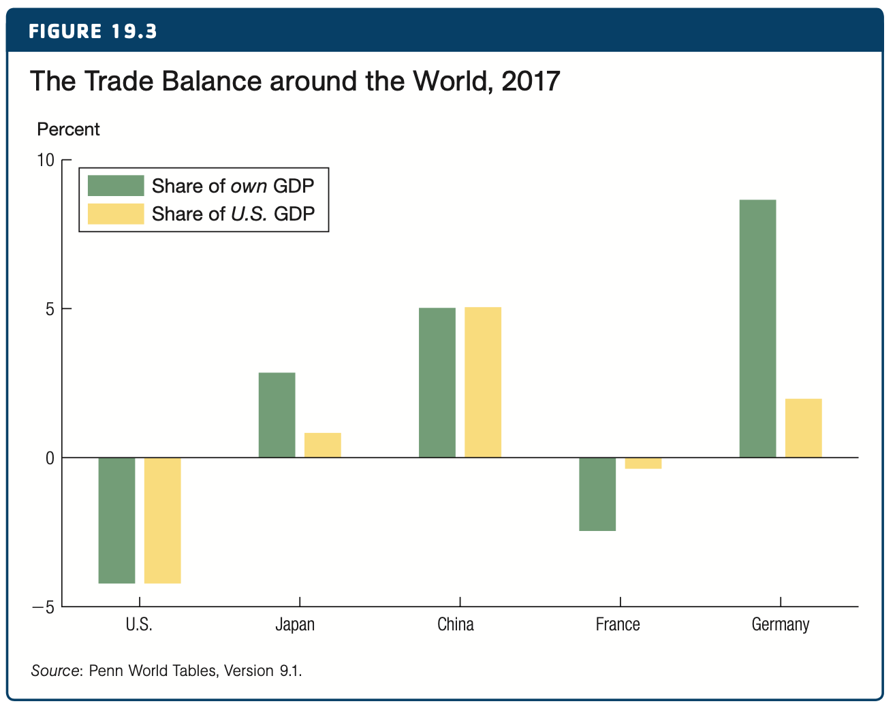
In 2017:
US and France ran a trade deficit
Japan, China, and Germany ran a trade surplus
US trade deficit is financed primarily by China
Southern Europe’s trade deficits financed primarily by Germany
Source: Macroeconomics, Jones, 2021
A Basic Reason for Trade
Consider the fundamental economic model: Robinson Crusoe Economy.
Step 1: each person produces all the goods he/she consumes.
Step 2: Two economies (islands) and two products (bananas and fish).
Economy one is endowed with 250 bananas and 750 fish / per year
Economy two is endowed with 750 bananas and 250 fish / per year
Trade between the can facilitate a consumption mix of 500 bananas and fish for each island. Can lead to welfare gains.
Trade Across Time
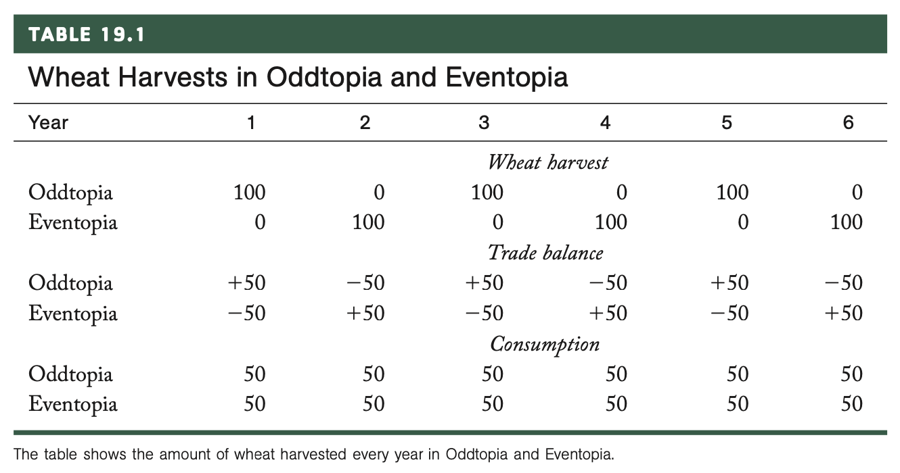
Consider two islands one good (wheat):
Eventopia succeeds in growing wheat in even years.
Oddtopia succeeds in growing wheat in odd years.
Inter-temporal trade, trade over time, allows the islands to smooth out the risk associated with a bad harvest.
In this example: perfect risk-sharing.
Source: Macroeconomics, Jones, 2021
Long-Run
In the long run trade must be balanced.
No one is willing to lend unless they will be repaid.
Deficits today represent borrowing from the rest of the world.
The US has been running a trade deficit for 25 years. The rest of the world has been lending goods and services to the US.
\(NX \equiv EX - IM\)
if \(NX < 0 \implies (C+I+G) > Y\)
if \(NX > 0 \implies (C+I+G) < Y\)
Borrowing allows the people in both countries to smooth consumption.
Trade with Production
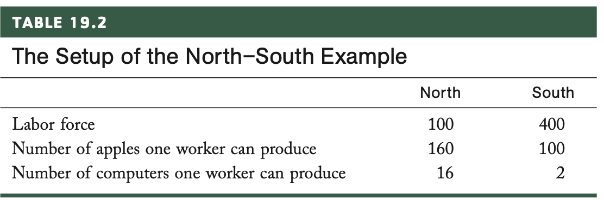
Two countries: North and South which prefer to spend half their budget on apples and half on computers.
- North is more productive in both sectors. A single worker can produce either 16 computers or 160 apples.
The fact that northern workers are more productive for both goods means they have an absolute advantage.
There may still be gains from trade. The North’s productivity advantage is much larger for computers than apples \(\implies\) North has a comparative advantage in computer production.
Source: Macroeconomics, Jones, 2021
Autarky
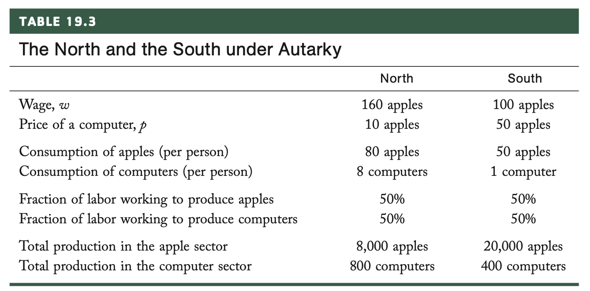
Still assume that people in both countries spend half their income on apples and half on computers.
\(\frac{price\:of\:apples \times consumption\:of\:apples}{wage,w}=.5\)
\(\frac{price\:of\:computers \times consumption\:of\:computers}{wage,w}=.5\)
Choose numeraire: apples - the price of computers is in apples.
Since wage is in apples it is equal to the number of apples that one can produce.
Source: Macroeconomics, Jones, 2021
Free Trade
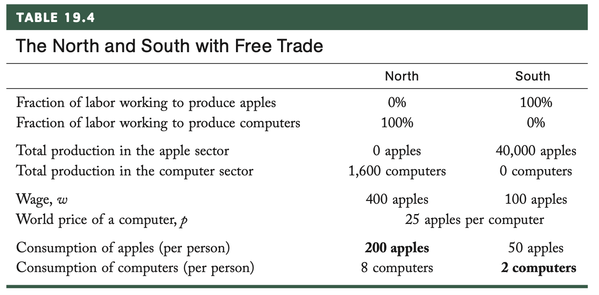
Computers sell for different prices, 50 apples in the South and 10 apples in the North.
Suppose one person could trade in this world? They would buy computers in the North and sell in the South. Creating risk-less profit or arbitrage.
North has a comparative advantage at computer production.
South has comparative advantage at apple production.
In this table the North and South completely specialize.
Source: Macroeconomics, Jones, 2021
Free Trade
Solve for the world price of a computer.
World produces 40,000 apples and 1,600 computers. Let’s guess that we used the same method for the world that we used for individual countries (40,000/1,600 = 25 apples).
Wages:
South produces only apples \(\implies\) wage = 100 apples.
North produces only computers \(\implies\) wage = 16 x 25 = 400 apples.
Welfare increases (consumption)
Note: workforce changes, nobody in the south is in high tech now.
Source: Macroeconomics, Jones, 2021
Trade in Inputs: Labor
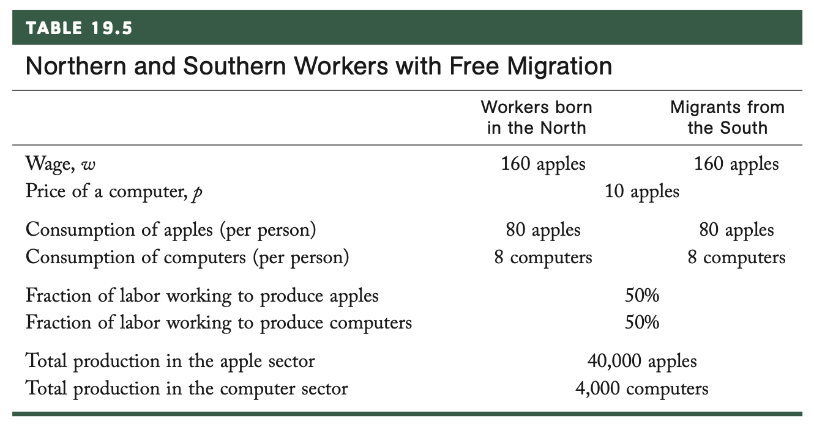
Open economy to the free movement of labor.
All of the workers from the South would work in the North.
Free trade is about comparative advantage
Free migration is about absolute advantage.
Economy exhibits constant returns to scale.
Southern workers receive all the welfare gains from free migration, gains were shared under free trade.
Gains to Southerners are greater than losses to Northerners
Note: Moving capital is less efficient due to lower TFP.
Source: Macroeconomics, Jones, 2021
Costs of Trade
In our example both groups were better off.
- In reality it is hard to convert farmers to computer manufactures and vise-versa.
Estimates of 7.5 million manufacturing jobs of the US may have been lost between 1979 and 2001.
Autoworkers in Michigan
Steelworkers in Pennsylvania
Textile workers in North Carolina
Other estimates trade with China may explain 25% of decline in manufacturing between 1990 and 2007.
Gains to winners are typically larger than losses to the losers.
- Policy needs to step in to redistribute some of these gains from trade
Trade Deficit and Foreign Debt
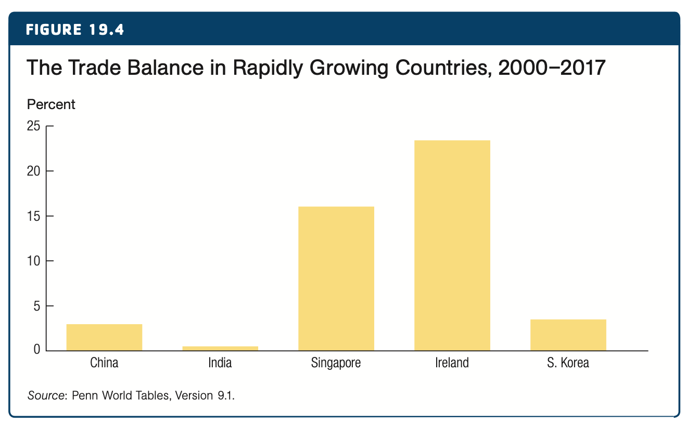
Consumption smoothing:
A country might want to run a large trade deficit if it expects to be richer in the future.
Needs to have accelerated future growth.
We do not see this as we look into the future of the US.
In fact rapidly growing countries largely experience trade surpluses.
“Permanent income hypothesis” trade theory may not hold up.
Maybe it is not rapid growth causing the large trade deficit but instead surpluses cause rapid growth.
Source: Macroeconomics, Jones, 2021
Trade Deficit and Foreign Debt
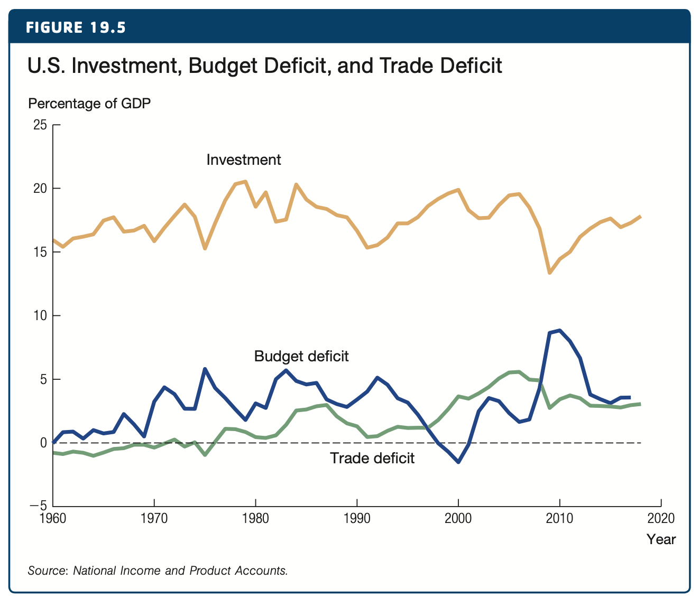
The twin deficits:
Large budget deficits in the late 1980s and more recently
Investments have not been reduced
Investments were financed increasingly by the trade deficit.
China’s economy is growing rapidly so one would think that is from foreign investment (trade deficit).
High domestic savings
Ships some of its goods and services abroad and invests abroad more than others invest in China.
Source: Macroeconomics, Jones, 2021
Net Foreign Assets and Foreign Debt
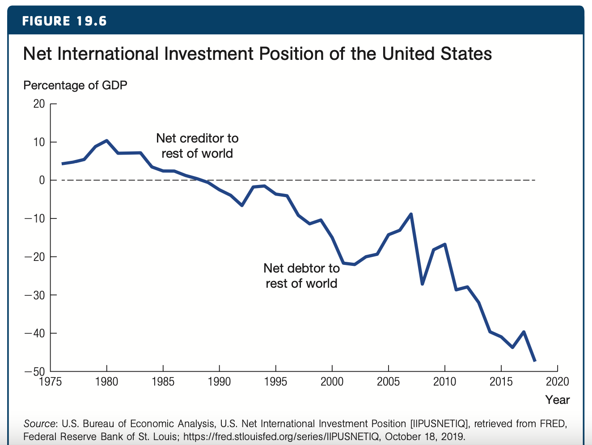
Trade deficit represents borrowing by US residents from the rest of the world.
it will have to be paid off in the future
the past 30 years of deficits will have to be offset by future trade surpluses
Net Creditor until mid 1980s and then Net Debtor to to world.
Net foreign debt exceeded 45% of GDP in 2018.
How and when this will be paid off is an open question.
Gradually vs Suddenly
Source: Macroeconomics, Jones, 2021
Chapter 20: Exchange Rates
Nominal exchange rate is the price of domestic currency in units of foreign currency. (i.e. 90 yen can purchase $1)
Real exchange rate is the price of domestic goods in units of foreign goods (i.e. it would take 1.3 foreign goods to purchase 1 domestic good)
In the long run the value of the real exchange rate is pinned down by the law of one price.
Quantity theory of nominal exchange rate: in the long run, the nominal exchange rate is pinned down by the relative supplies of different currencies.
Chapter 20: Exchange Rates
Sticky inflation means that the law of one price may not hold in the short run.
Interest rates and exchange rates move together.
- A tightening of monetary policy causes the exchange rate to appreciate.
The real exchange rate is a key determinant of imports and exports.
If it goes up - exports fall and imports rise.
Net exports are a decreasing function of the real exchange rate.
Chapter 20: Exchange Rates
The short run model including exchange rates works just like our short run model from previous chapters.
Net exports behave like investments: lending abroad defers consumption to the future.
Quantitatively the inclusion of exchange rates makes the economy more sensitive to interest rates.
The international financial system has been based on three different regimes in the past 150 years.
The policy trilemma says that open economies can achieve at most two of these three goals:
stable exchange rates
monetary policy autonomy
free flows of international finance
The Nominal Exchange Rate
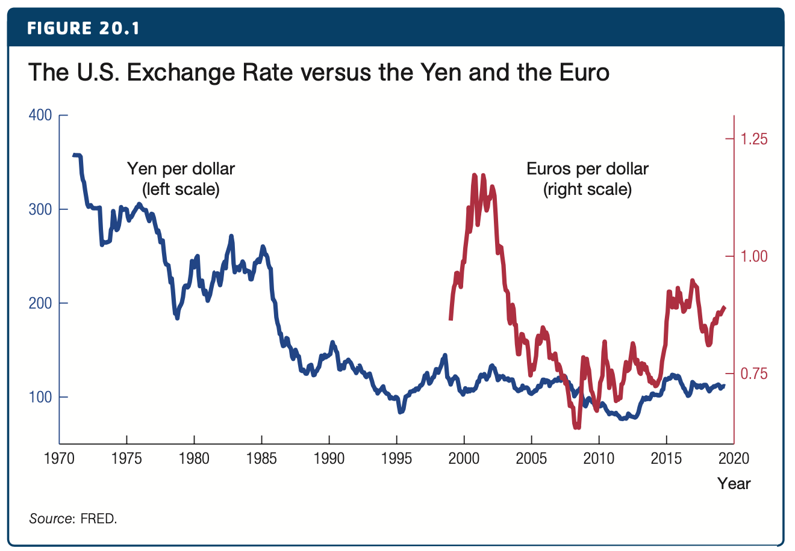
The nominal exchange rate, \(E\), is the rate at which one currency trades for another.
- For example, $1 can be traded for 87 Japanese Yen or 1.15 Euros. (currently 139 Yen, 0.96 Euros)
In 1971: 357 Yen required to buy $1 and this price has fallen to 139 Yen. This decline in the price of the dollar is depreciation.
In 1999: 0.92 euros required to buy $1 and this price has increased to 1.15 euros. This is dollar appreciation.
Source: Macroeconomics, Jones, 2021
The Law of One Price
Arbitrage will not exist for long.
If computer chips sold for more in Japan than the US.
- Someone would buy in US and sell in Japan.
Law of one price: \(EP=P^w\)
- \(E\) : exchange rates, \(P\) : price in the US, \(P^w\): price in a different country.
\(E\frac{euros}{dollars}\times P\frac{dollars}{chip}=P^w\frac{euros}{chip}\) : units cancel
In practice, the law of one price need not hold exactly.
- Taxes, tariffs, and transportation costs are frictions that interfere.
Law of one price is a useful construct
Law of One Price, Inflation
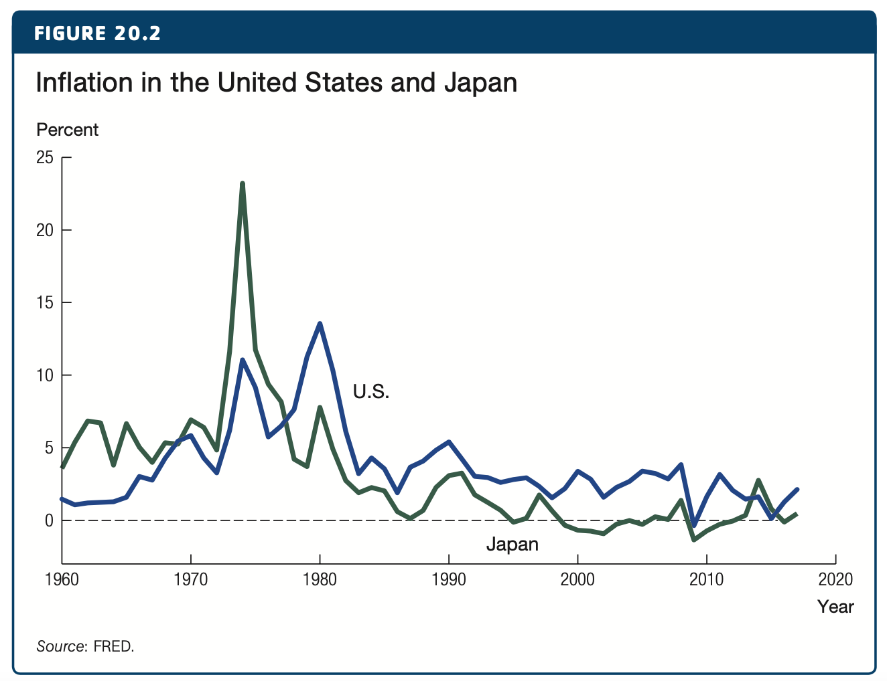
Move to talking about US price level, $P$, and rest of world price level, \(P^w\).
Price levels determined by the quantity theory of money.
\(\bar{E}=\bar{P}^w / \bar{P}\) : over-bars indicate long run
Nominal exchange rate is simply the ratio fo price levels between two economies in the long run.
One reason that the dollar depreciated relative to the yen over the past 25 years is the difference in inflation of the two economies.
Source: Macroeconomics, Jones, 2021
The Real Exchange Rate
The nominal exchange rate gives a price at which currencies are exchanged.
The real exchange rate gives the price at which goods are exchanged.
Real Exchange Rate: \(EP/P^w\)
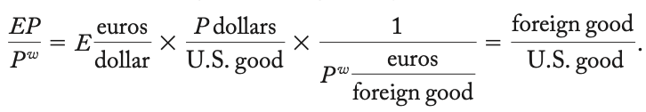
Link to the law of one price is straightfoward.
\(R\bar{E}R =\bar{E}\bar{P}/\bar{P}^w=1\)
\(RER\) is the real exchange rate, \(R\bar{E}R\) denotes long run.
Big Mac Index
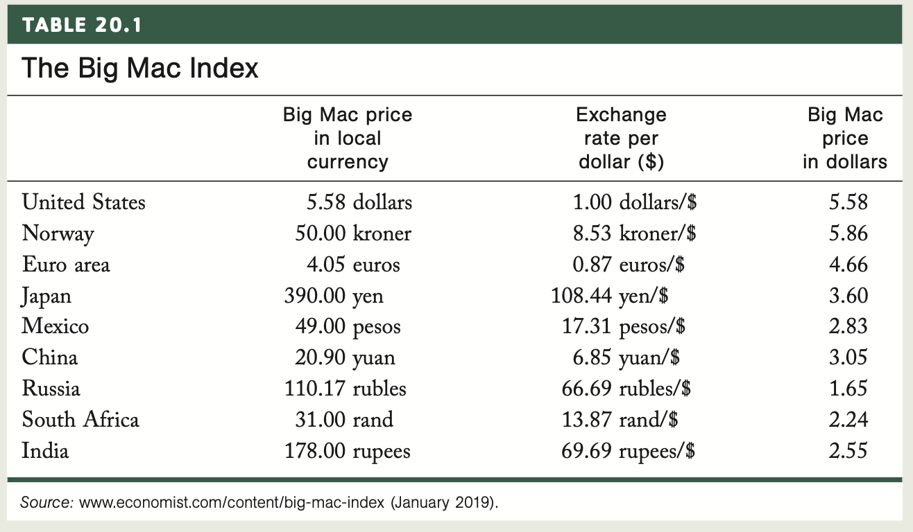
The Economist publishes their Big Mac Index which can show us some interesting things about the law of one price.
The law of one price does not hold in this case.
- It could be the case that Big Macs are more expensive in Norway because the kroner is overvalued. So one kroner buys more dollars than it should pushing the prices for Big Macs up.
The law of one price only holds for easily traded goods.
These prices reflect internal prices of goods an wages.
Source: Macroeconomics, Jones, 2021
Closer look at Japan
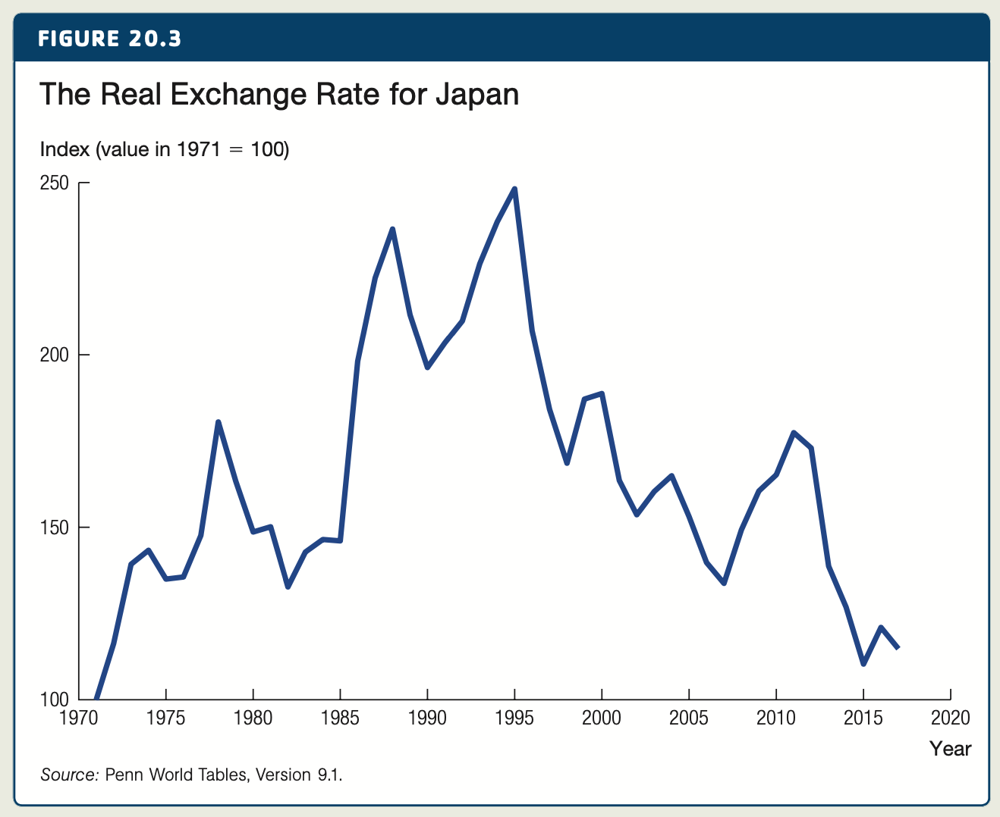
Looking at nominal exchange rates and inflation for Japan/US part of the story seems to be missing.
1970s and 1980s Japan was a rapidly growing economy.
During periods of rapid growth non-traded goods like haircuts, live performances, increase in price.
Generally expect real exchange rate to appreciate as the country develops.
Source: Macroeconomics, Jones, 2021
Exchange Rates in the Short Run
Currencies are traded for two main reasons:
Facilitate international trade.
Traders in financial markets need currency to make financial transactions.
More than 100x the daily GDP of the US is traded daily in financial markets.
The nominal exchange rate between two countries is pinned down by trading of fx.
Supply and demand: supply of currencies given by central banks, demand of international and financial markets.
Exchange rate is the price that clears the market.
We view central banks setting nominal interest rates rather than explicitly controlling the money supply.
Exchange Rates in the Short Run
Suppose the Fed decides to increase the Fed Funds rate.
Bonds in the US now pay a higher interest rate than before, which attracts global bond traders to purchase US bonds.
In order to purchase these US bonds they need dollars, so the price of US dollars appreciates (\(E\) increases).
Movements in the domestic nominal interest rate (holding the world interest rate constant) cause the nominal exchange rate to move in the same direction.
- \(\uparrow i^{US} \implies \uparrow E\) and \(\downarrow i^{US} \implies \downarrow E\) .
Real Exchange Rates in the Short Run
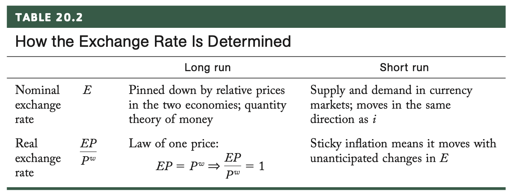
Real exchange rates move with nominal exchange rates in the short run.
Sticky inflation means that \(EP/P^w\) can deviate from 1 in the short run.
Arbitrage takes time.
Transferring goods across countries is costly.
We expect arbitrage in the long run.
Sticky inflation means that movements int he nominal exchange rate translates to movements in the real exchange rate in the short run.
- \(\uparrow E \implies \uparrow EP/P^w\)
Source: Macroeconomics, Jones, 2021
Fixed Exchange Rates
Before 1973 many countries maintained a system of fixed exchange rates.
Between 1998-2005 China pegged their currency at 8.28 yuan per dollar
Argentina pegged 1 peso to 1 dollar from April 1991 to December 2001.
In order to maintain a fixed exchange rate the price level in Argentina must move exactly with the price level in the US.
The central bank in Argentina follows a monetary policy dictated by the Federal Reserve in the US if it seeks to maintain a fixed exchange rate.
Argentina had trouble stabilizing their inflation - a fixed exchange rate “imports” Fed Policy.
What are the issues with a fixed exchange rate? Fiscal issues might lead to the need to print money.
- The Argentina peg was undone in January 2002.
Open Economy and the Short Run
Originally our IS curve assumed that trade balance (NX) was a fraction of potential output.
- We now recognize that movements in the real exchange rate can influence trade.
If goods at home are expensive(inexpensive) relative to goods abroad, real exchange rate is high(low), we expect exports to be low(high) and imports to be high(low).
We augment the net exports equation as follows: \(NX_t/\bar{Y}_t = \bar{a}_{nx}-\bar{b}_{nx}(R_t-\bar{R}^w)\)
\(\bar{a}_{nx}\) : baseline level of net exports, medium-run trade balance.
\(\bar{b}_{nx}(R_t-\bar{R}^w)\) : business-cycle concerns, depending on real interest rate. Specifically the gap between real interest rate and rest of the world real interest rate (which we take as exogenous).
\(\uparrow i \implies \uparrow R\) and \(\uparrow E \implies \uparrow \frac{EP}{P^w} \implies \downarrow \frac{EX}{\bar{Y}}\) and \(\uparrow \frac{IM}{\bar{Y}} \implies \downarrow \frac{NX}{\bar{Y}}\).
New IS Curve
IS Curve:
\[ \tilde{Y}_t = \bar{a}-\bar{b}(R_t-\bar{r}) \]
where
\[ \bar{a} \equiv \bar{a}_{c} +\bar{a}_{i} +\bar{a}_{g} +\bar{a}_{nx} -1 +\bar{b}_{nx}(\bar{R}^w-\bar{r}) \]
and
\[ \bar{b} \equiv \bar{b}_i + \bar{b}_{nx} \]
Change in the real interest rate of the rest of the wold creates an aggregate demand shock in the domestic economy.
Real Exchange Rates in the Short Run
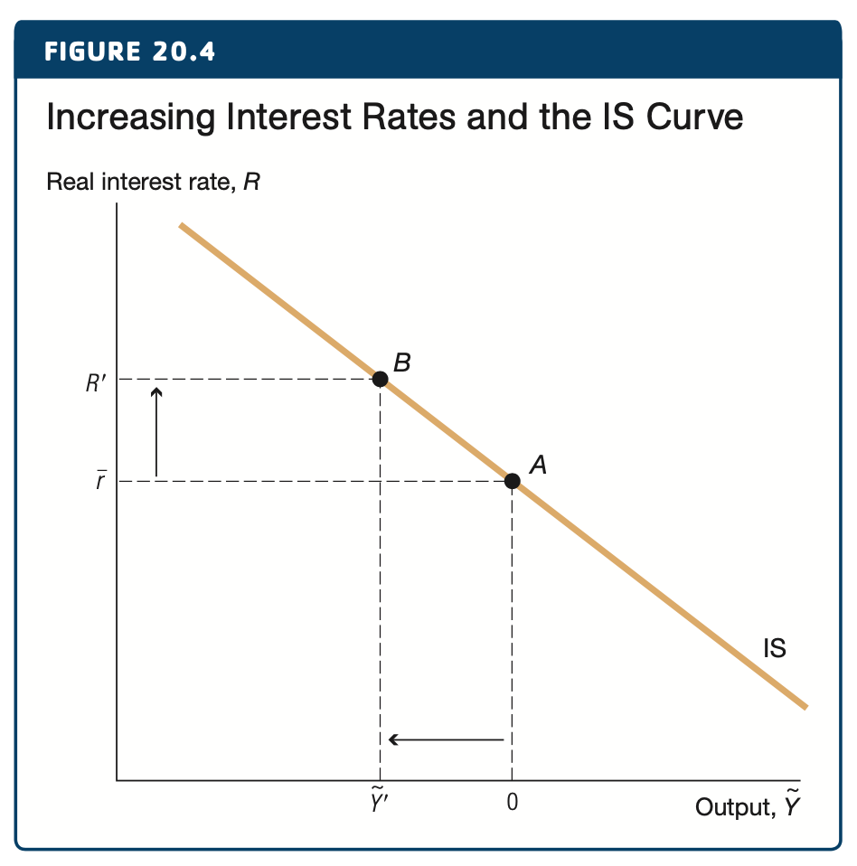
What happens to the IS curve when central bank raises interest rates to tighten monetary policy?
Because of sticky inflation short run output declines.
Since real interest rate now exceeds marginal product of capital firms reduce their demand for investment.
Increase in nominal interest rate leads to an increase in demand for dollar-denominated financial assets. Real exchange rates appreciate exports decline, imports rise.
Fall in net exports is another reason why output falls below potential.
Source: Macroeconomics, Jones, 2021
Change in Foreign Interest Rates
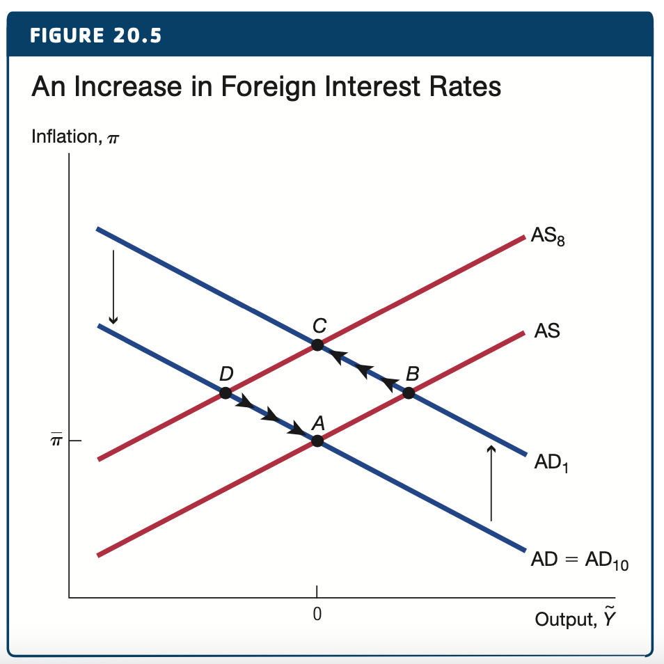
European Central Bank raises interest rates in euro-denominated assets, investors demand more euros and fewer dollars.
Euro to appreciate and dollar to depreciate.
Sticky inflation \(\implies\) real exchange rate in the US to depreciate as well (net exports are stimulated).
IS curve for the US will shift out.
AS/AD framework same but different economic interpretation. (+)tive shock to \(\bar{a}\).
Usual dynamics from and AD shock take over, booming economy leads inflation to rise, the Fed raises US interest rates to combat inflation, eventually real interest rates fall back in line.
Source: Macroeconomics, Jones, 2021
Exchange Rate Regimes
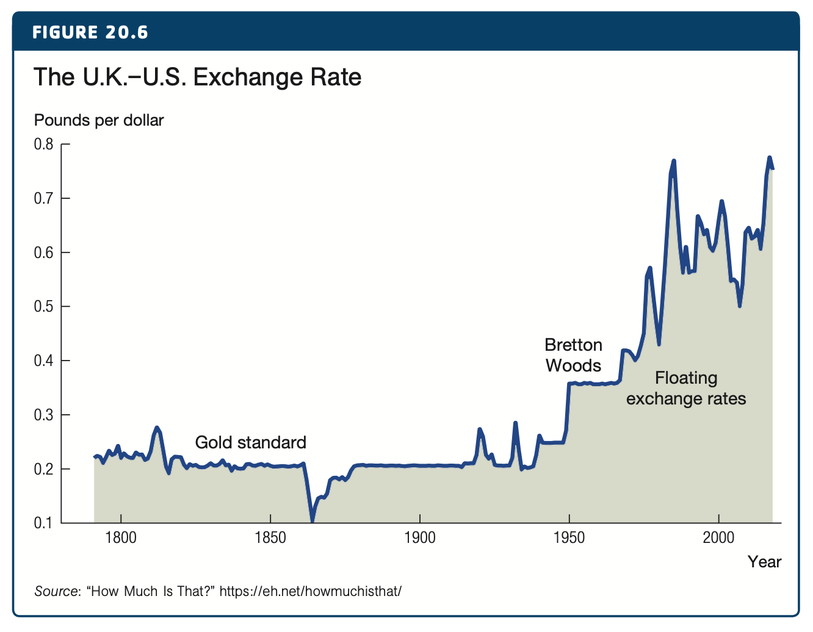
Gold standard - each country fixed a price that they were willing to pay for one ounce of gold.
Bretton Woods - United States pegged their currency to $35 per ounce price of gold and other economies specified a fixed exchange rate to US dollar.
Floating exchange rates - in the 1970s inflation led to a collapse of Bretton Woods.
Now monetary policies are not formally coordinated.
The value of nominal exchange rate is determined by supply and demand in the markets for foreign exchange.
Source: Macroeconomics, Jones, 2021
Policy Trilemma
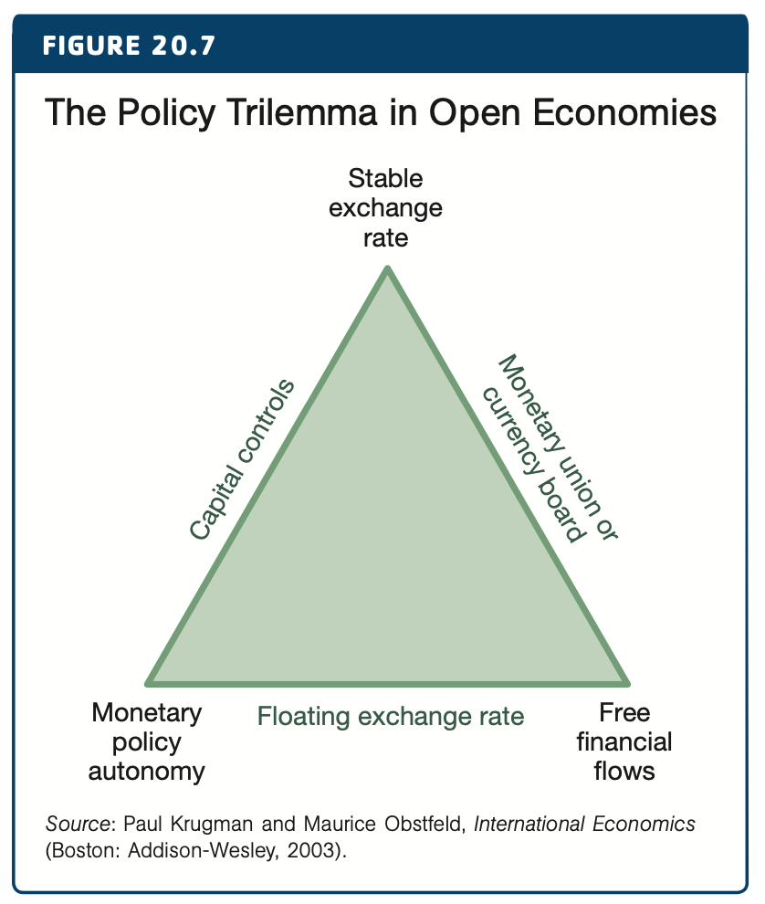
Three goals related to the international monetary system and an open economy might like to achieve:
A stable exchange rate - makes it easier for firms and individuals to plan over time.
Monetary policy autonomy - allows governments to smooth shocks (think short run model)
Free flows of international finance - allows resources to be allocated most efficiently. Allow countries to borrow when times are bad in order to smooth consumption.
Source: Macroeconomics, Jones, 2021
Policy Trilemma
Countries can choose only one edge - only two out of the three goals can be accomplished.
US sets its own monetary policy and allows free financial flows.
Argentina between 1991 and 2001 had a currency board. Held foreign exchange reserves in order to peg to the dollar.
Argentina could not use monetary policy to respond to shocks to it’s economy.
Many exchange traders did not believe the fixed exchange rate would hold, started to bet against the peso, reserves ran low and Argentina gave up the peg.
China is an example of capital controls - instituting tight controls on financial flows with the rest of the world. Government regulated exchange rate and did not allow financial traders to trade large volumes of currency in the open market.
- Tightly regulated allows the regulator to set whatever price it wishes.
Source: Macroeconomics, Jones, 2021
What Side to Choose
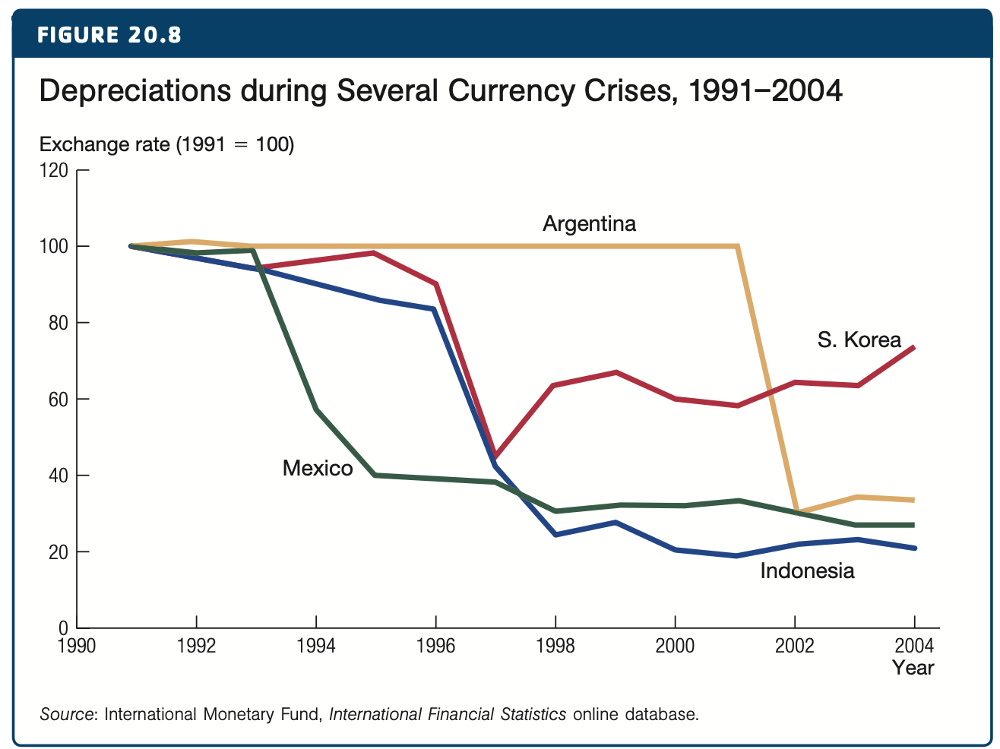
Three sides have merits to the country that chooses them.
Mexico Currency Board
Mexico from 1989 to 1994 exhibited strong economic growth, booming investment, and a relatively stable exchange rate of 3 pesos per dollar.
Large capital flows and the stable exchange rate imply something similar to a currency board.
Late 1994 political turmoil and large foreign borrowing (trade deficit) lead to devaluation of the peso.
Central bank attempted to maintain exchange rate, but eventually foreign reserves ran low.
Mexico was forced to devalue the peso and let it float against the dollar.
Source: Macroeconomics, Jones, 2021
What Side to Choose
Three sides have merits to the country that chooses them.
Asian Currency Crisis
Pre-1997 Asia was home to the fastest growing countries in the world.
A substantial part of this growth came from high and rising investment rates.
Before 1990s most of its investment was financed through domestic savings.
During the 1990s turned to foreign saving to finance their growth.
Many, but most note-ably Thailand and Korea, were running large trade deficits.
1997 currency speculation led to sharp declines in Asian exchange rates.
Many firms had taken loans in dollars so the decline in domestic currency made loans more costly to repay.
Resulted in steep declines in economic activity.
Source: Macroeconomics, Jones, 2021
What Side to Choose
Three sides have merits to the country that chooses them.
Argentina’s currency board ends in 2001
in April 1991 they had adopted a formal currency policy board.
Pegged peso to dollar.
Backed by dollar and gold reserves it was successful in ending hyper-inflation.
Throughout the 1990s had a modest trade deficit of just under 2% of GDP.
Mexico & Asian crisis
1999 Brazil’s currency declined leading to a negative demand shock in Argentina (trade surplus)
Unemployment and government debt increased, leading people to wonder about their ability to pay off debts.
Risk premiums went up, in 2001 Argentina defaulted on its debt.
Source: Macroeconomics, Jones, 2021
Policy Trilemma
Most economies are floating exchange rate.
China has implemented capital controls.
Euro is attempting one thing for their member nations, floating exchange with the rest of the world.
Source: Macroeconomics, Jones, 2021
The Euro
1999, 16 EU member nations one currency.
Facilitates better planning because it eliminates currency fluctuation within the EU.
No currency transaction costs of trading with your neighbor.
One bank controls monetary policy
ECB quickly achieved a high degree of credibility and transparency in conducting monetary policy and coordinating inflation expectations.
Problem: individual countries cannot control monetary policy.
The Euro Crisis
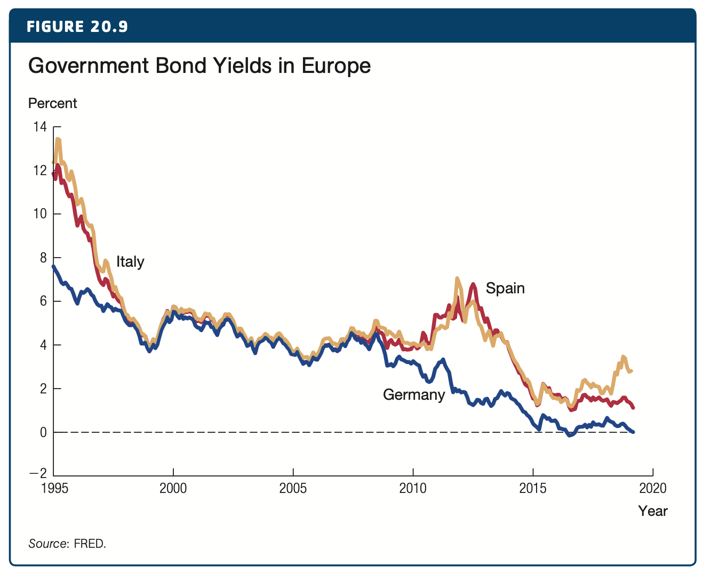
In 1999 the Euro meant that inflation in different EU countries was the same.
Sovereign debt (superior), or government held debt, yields converged.
The 2008 GFC started in the US but moved to Europe, investors worried about default risk on some countries debts.
- Italy, Spain, Greece, Ireland, etc
Investors demanded a higher interest rate to lend to these governments.
Source: Macroeconomics, Jones, 2021
The Euro Crisis
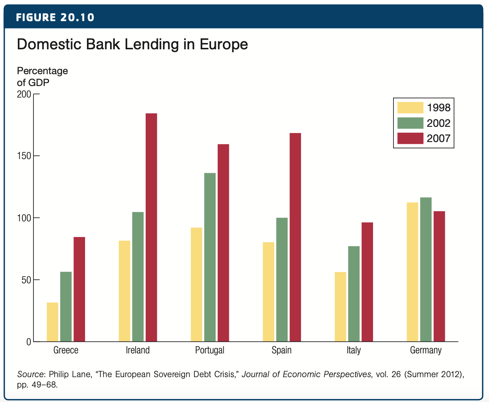
Domestic lending in the Southern European economies rose sharply when the Euro was established.
The south was economically more poor than the north, given economic reforms associated with the Euro, investors believed that high returns to investment could be obtained.
The south would benefit from the new investment and investors would benefit from high returns.
Source: Macroeconomics, Jones, 2021
The Euro Crisis
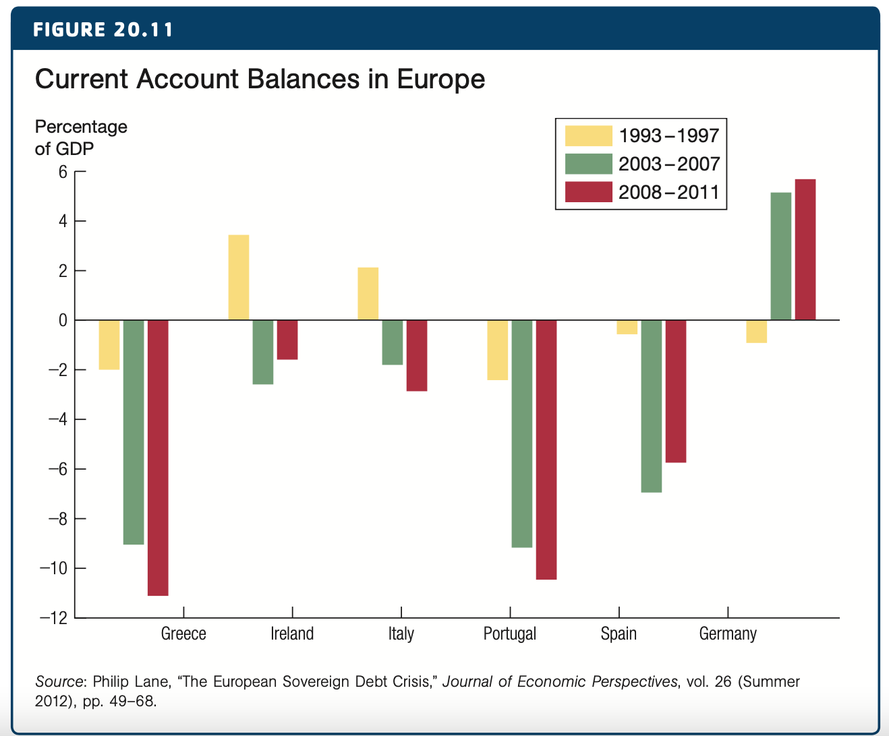
One can see the same for foreign investment.
Current account balance is similar to trade balance + interest payments.
Many domestic and foreign loans were based on excessive optimism.
Many European economies experienced property an housing bubbles, reflecting the easy availability of credit.
Source: Macroeconomics, Jones, 2021
The Euro Crisis
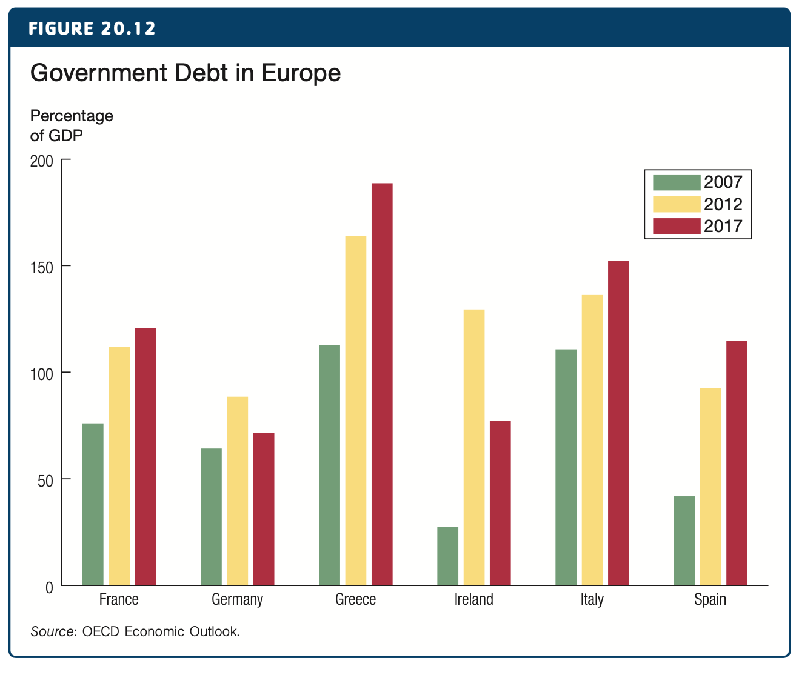
The advent of the GFC led to many of these loans going bad.
Governments expanded their borrowing party to keep their banks from going under.
Ireland guaranteed all of their financial institutions.
Higher levels of debt means higher servicing costs.
- More investor doubt means higher servicing costs, leading to more debt.
Cannot print money!
ECB said they would “do whatever it takes to preserve the euro”. Added unlimited quantities of debt onto their balance sheet.
Source: Macroeconomics, Jones, 2021
Next Week
No class
Homework posted soon
Read Chpt 20 and Chpt 16

ECON 5120 | Scott Payseur